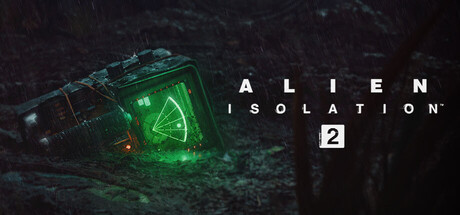
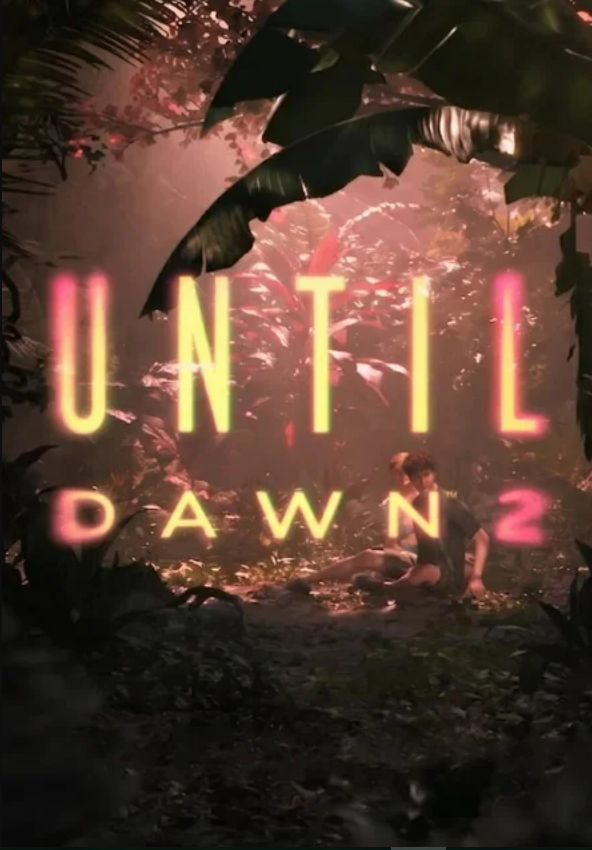
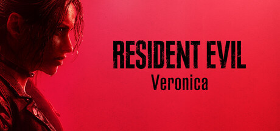
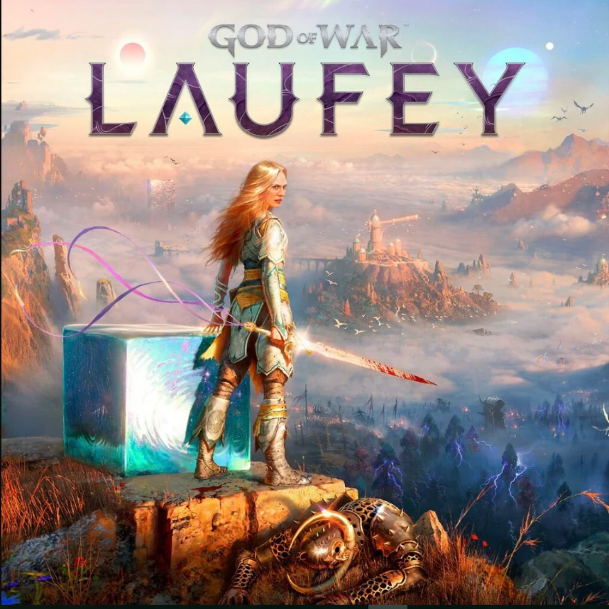

Alien Isolation 2

Когда поисковая команда обнаруживает на отдаленной колониальной планете таинственные обломки космического корабля,
одна из участниц решает во что бы то ни стало исследовать их.
Никто оказывается не готов к ужасу, который внезапно обрушивается на поселение команды.
Безопасности нет нигде.
Until Dawn 2

съёмочная команда охотников за привидениями с постановочного канала Dead True отправляется на тропический остров.
Однако там они впервые сталкиваются с настоящей угрозой — теперь молодые люди должны попытаться дожить до рассвета.
Resident evil Veronica

Resident Evil Veronica — это ремейк вышедшей в 2000 году Resident Evil Code: Veronica.
Новый проект сохраняет дух оригинала, но при этом представляет обновлённый геймплей, переосмысленный сюжет и невероятно детализированную графику.
God of War Laufey

Действие игры будет происходить параллельно событиям оригинальной God of War и Ragnarök.
В центре сюжета окажется Фэй — супруга Кратоса.
Воительницу ждёт путешествие по Вечности — загробному миру, ей предстоит спасти мужа и сына, так как план, разработанный для их защиты, оказался под угрозой.